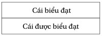

Mọi tâm trí của con người là một nơi thí nghiệm tiềm năng để kiểm tra những gì diễn ra trong tâm trí người, dù họ có ở xa cách nhau bao nhiêu.
C. Lévi-Straus, Định chế tô-tem hiện nay
... Vì chẳng có vấn đề phải kết luận, cuốn sách chỉ muốn dẫn nhập vào một miền mơ tưởng. Đối với tôi điều quan trọng chẳng phải là chuyện hiểu (và càng chẳng quan trọng chuyện cắt nghĩa) mà là cùng thấy, khởi đầu của một lối đi không chỉ dừng lại ở đấy, một lối trổ nhằm đi xa hơn nữa, chẳng biết đến đâu - chấp nhận mạo hiểm.
Cuốn sách này chỉ muốn nói điều cốt yếu, và gợi ý tiếp những gì còn lại; theo lối của các huyền thoại, nó đặt vấn đề nhiều hơn là giải quyết. Tôi thấy mình không hề gần gũi với các nhà ngôn ngữ học nghiêm khắc phái De Saussurre nhấn mạnh vào cái thanh ngang.

cũng như những người theo phái Lacan chặt chẽ chỉ thưởng thức cái biểu đạt “thuần túy”. Tôi đi tìm cái được biểu đạt; chúng muốn nói gì đây? Tôi trình bày các tư liệu, tôi tổ chức chúng lại, tôi phác thảo phân tích. Cái ấy không đi được thật xa, nhưng nó đến từ xa. Và đi về đâu? Đến một lý thuyết, vừa thiên tài vừa phù phiếm chăng? Hay đến giải pháp cho các vấn đề của chính khoa nhân học?
Công trình về cõi mơ tưởng này không phải là một luận văn - cũng không phải là một mô tả đơn giản, sẽ chỉ đem lại một ảo ảnh. Đây là một lần đi qua, như một cuộc du ngoạn triết học. Tôi cố ý bỏ qua những ghi chú về các “tác giả” được trích dẫn cũng như các chú thích ở cuối trang. Tôi chỉ nói về những người bạn và những người quen, chứ chẳng bao giờ về những người “cung cấp thông tin” (có thù lao!). Rất nhiều khi tôi để cho những người Giarai tự họ bộc lộ, không bị mắc lừa vì những mưu mẹo trong lời nói của họ, nhưng cũng không phán xét hay phân loại; nên tôi chẳng chia cắt dứt khoát giữa mơ tưởng, huyễn hoặc, ảo ảnh, ảo giác - người ta vẫn thường trượt từ cái này sang cái kia. Lấy những khung văn hóa của mình làm thành một cái sàng vạn năng đem sàng cả thế giới, là hành động theo lối thực dân, tự cho mình quyền làm quan tòa. Tôi thích sự mập mờ và lưỡng lự hơn. Nếu tôi dùng đến từ “điên”, ấy là tôi chỉ muốn dịch từ hüt, trong ý nghĩa mà người Giarai hiểu và trong những trường hợp họ nói đến điều ấy. Tuy nhiên, dẫu sao tôi cũng phải diễn dịch.
Để làm được chẳng hạn một món phở ngon, phải biết những gì đi với nhau, phối hợp những thành phần gì với nhau thì sẽ làm dậy lên mùi vị đích thực của cá hay của gà; phải gắn lại với nhau, trộn lẫn vào nhau, thử nghiệm. Các tư liệu trong công trình này cũng vậy, cách sắp xếp phải làm cho chúng trở nên dễ hiểu, lý thú, có nghĩa. Nguyên việc đó cũng đã là giải thích và bình phẩm rồi, giải thích và bình phẩm còn nằm cả ở những điểm lặng của ngôn từ và những khoảng trắng trên trang giấy, ở những điều chẳng nói ra chỗ này, chỗ nọ.
Khoa học nhân văn không được xếp vào hàng khoa học chính xác, vì lẽ gì thì đã rõ. Trong nhân học, không có sự kiện thô cũng chẳng có khách quan thuần túy. Chỉ có những “dữ liệu” được cung cấp bởi và qua, bởi những người nói hay không nói, làm hay không làm; qua cái nhìn và cách trình bày riêng của người đưa chúng ra, chính họ mang dấu ấn của ý thức hệ hay của chính trị, ngoài cái chủ quan riêng của họ nữa. Ở đây tôi cung cấp thông tin, mà không đưa ra bài học, tôi chủ yếu muốn nói với những ai cho rằng con người có thể trở thành điên vì thiếu rừng thật cũng như vì quá dư thừa rừng bị ám. Mối quan hệ của chúng ta đối với cây cối không phải chẳng liên quan gì đến trạng thái cái tưởng tượng của chúng ta.
Khoa dân tộc học “trừu tượng” có thể dùng làm một mánh khóe nghi binh để né tránh những vấn đề riêng của chúng ta, nếu nó không được dùng để phóng chiếu những vấn đề ấy lên những người khác. Một lối nói tối nghĩa có thể che giấu một sự trống rỗng bên trong; người ta sử dụng cách đó khi chẳng có gì để nói cả. Một khoa nhân học lành mạnh đưa đến chỗ tự nhìn lại chính chúng ta - điều chúng ta đã không còn làm nữa, mà chẳng nhận thấy - và nhắc chúng ta nhớ rằng khi nói về những người khác, bao giờ cũng là ta đang nói về chính mình đấy.
Lời nhập đề gồm có hai phần này, một cuốn sách trong một cuốn sách và nó ẩn nghĩa trong suốt cuốn sách, có thể là đối tượng cho một công trình riêng. Tuy nhiên, ý định của tôi không phải là xây dựng một lý thuyết mà là “chiêm ngưỡng” một cảnh quan mơ tưởng; tuy nhiên, một lối tiếp cận như vậy vẫn đặt ra một vấn đề lý thuyết không thể tránh.
Những hình ảnh “điên loạn” tồn tại thực trong chúng ta, cũng như thế giới thực tại vậy (nhưng theo một cách khác). Dù ít nhiều tập trung vào cùng một chủ đề, cái trải nghiệm và cái tưởng tượng (cảm thấy, thu nhận) lại không cùng một “bản chất”, quan hệ giữa chúng với nhau cũng gần giống như giữa böngat và pô vậy; thường gắn chặt với nhau, cũng có khi chúng lại tách xa nhau, đến mức tạo nên một vết xé sâu. Khi đó huyền thoại nội tại không còn đi cạnh cuộc sống nữa, nó thay thế cuộc sống.
Nhân loại đã tưởng tượng ra hai vị thần: người đàn ông, Lucifer, là ánh sáng và sự minh bạch của các hệ thống giản đơn hóa; và người đàn bà, Lilith, ở phía những bóng tối linh thiêng. Thiên Chúa là bóng tối và huyền thoại là sự tối mờ đi của thực tại, nhưng lại là ánh sáng phóng chiếu sang phía bên kia (ở đó là ngày). Người Giarai đã tưởng tượng ra Drit và Mẹ Rú, đứng giữa (và ở bên kia) các lãnh chúa cùng các toán quân của y, một phía, và phía kia, là rừng cùng các cô gái-rừng của nó.
Xã hội Giarai, như đã nói, theo dòng dõi mẹ (matrilinéaire), con cái mang họ mẹ (matronymique), cư trú bên phía nhà mẹ (matrilocale) (rất khác với ba chữ k Đức, có thể dịch là “trẻ con”, “nhà bếp”, “nhà thờ”, nhưng không phải là không có liên quan với chúng); cộng với ba chữ m ấy lại còn có ba chữ f (forêt [rừng], femme [đàn bà], folie [điên loạn]) đều là giống cái. Người Giarai có hai đại từ để chỉ ngôi thứ hai số ít: ih, gần tương đương với từ “vous” lễ phép trong tiếng Pháp, ih dùng cho cả nam và nữ, đặc biệt khi nói với người lớn tuổi hơn hay đáng kính hơn mình, và ong giống như “tu” trong tiếng Pháp nhưng chỉ dùng cho nam, để nói với một người trẻ tuổi hơn mình, một người bạn, hoặc người đàn bà dùng để nói với người yêu hay chồng mình - những người này gọi người nữ là ih (hoặc mê, rất âu yếm). Thông thường người ta dùng ih khi nói với một cô gái trẻ, ong khi nói với một người con trai, không thể gọi ngược lại. Những chuyện kể có thật và truyện hư cấu đều cho thấy những người bị rối loạn tâm thần nhiều hơn cả là những người đàn ông. Đàn bà cân bằng hơn, nhưng ít sáng tạo hơn. Đàn ông không bị bận rộn nhiều như đàn bà trong các công việc thường ngày, họ có thì giờ để mà thơ thẩn và tự khám phá chính mình; 80% những người kể các huyền thoại cho tôi nghe là đàn ông.
Người đàn ông Giarai luôn giữ một mối gắn bó “cuống rốn” thường trực với ami’, mẹ mình, ngay cả sau khi anh ta đã lấy một người vợ ở bộ tộc khác. Bao giờ anh ta cũng ở giữa hai người đàn bà. Từ đó mà có Drit, đi tìm tính nữ mà anh mang trong chính mình, bao giờ cũng đi cặp với Mẹ Rú và gắn với các dra
dlei
, đến mức gộp với Mẹ Rú và với dra
dlei
thành một “mẫu người” lưỡng tính - ta không thấy anh ta có hậu duệ. Vượt xa hơn các
mögap
,
möyun
,
möyun
, Drit là một người con trai sống rất thoải mái với cô gái-rừng, bởi vì anh cùng một “bản chất” với các cô, hiện thực hóa một sự cân bằng giữa tự nhiên và xã hội, giữa nữ và nam.
Huyền thoại là lời nói được lặp lại, là tưởng tượng tập thể, còn hơn cả một ký ức, là sự thẩm thấu vào một không gian chung, rộng mở cho mơ tưởng, cho vô tư và cho cộng sinh với cỏ cây, muông thú và những người đàn bà.
Rất thường khi người ta đã định đề hóa tính phi thời gian của các huyền thoại và tính ngoại lịch sử của các dân tộc truyền thống; đấy là lỗi lầm của các nhà huyền thoại học và những người chủ trương cấu trúc luận, chứ không phải là do các dân tộc vẫn đang còn tiếp tục sáng tạo ra huyền thoại. Huyền thoại và ý nghĩa của nó biến đổi, đôi khi chính trị hóa, và hẳn là phải lịch sử hóa - chính sức mạnh của huyền thoại cho phép nó làm được điều đó, nhất là đây không phải những “huyền thoại về cội nguồn”, như nhiều tác giả thường quy gọn huyền thoại vào loại đó, mà là những truyện kể siêu thời gian, thuộc hư cấu, dù chúng có được sinh ra, có phát triển, biến đổi. Và đối với người kể chuyện, sự nối tiếp, trong thời gian, của những lần kể chẳng bao giờ giống hệt nhau (nội dung và ngữ cảnh: cử tọa), chẳng phải đấy cũng là một thứ lịch sử của huyền thoại sao? Vả chăng, tính chất tuyến tính phải chăng là một yếu tố hợp thành tất yếu của lịch sử? Tôi đặc biệt nghĩ đến quan niệm của các dân tộc theo Cơ Đốc giáo: nối tiếp là tiến triển đến một cõi bên kia (“thế giới bên kia”) ở cuối hành trình. Song, đối với người Giarai, cõi bên kia không phải là tương lai, mà là hiện tại; nó ở đây, đồng thời - điều đó không có nghĩa là không có lịch sử, cũng như xã hội không phải là một hệ thống bất biến và hài hòa.
Còn về tính chất “tập thể” của ký ức và của cái tưởng tượng, cần phân biệt sự diễn đạt cái tưởng tượng đó (theo thể nói) với cách nó được cảm nhận, tiếp thu, trải nghiệm. Tôi đã chỉ ra những tình huống xung đột cá nhân ở những người nhạy cảm hơn cả; nếu họ không đủ vững mạnh, họ có thể trượt đến chỗ “điên loạn”, khi họ không trở thành thầy pháp. Những xung đột cá nhân ấy dường như chỉ là sự phóng đại của những rối loạn tiềm tàng trong mọi người, do những mâu thuẫn nội tại của xã hội, càng nặng thêm và sai lệch đi vì sự tiếp xúc gần khít với những nền văn minh hoàn toàn khác lạ. Việc dồn lại thành những trung tâm định cư đã làm rối loạn các cấu trúc truyền thống, trong đó lối cư trú, lối sống và môi trường đều gắn chặt; sự đứt gãy của tổng thể đó dẫn đến tình trạng mất quân bình (cả về tâm thần).
Những thăng trầm của thế giới mơ tưởng trong thời gian của tộc người và trong không gian xã hội của họ là khả dĩ, sống động và có lợi, khi nào họ còn giữ được không gian ấy và bản sắc của họ. Nhưng mọi Quyền lực đều muốn lên án điều đó, coi là cổ hủ và chậm tiến nhằm xóa bỏ mọi khác biệt, san bằng, cũng tức là hủy hoại. Cho đến bao giờ Drit mãi còn là Drit?